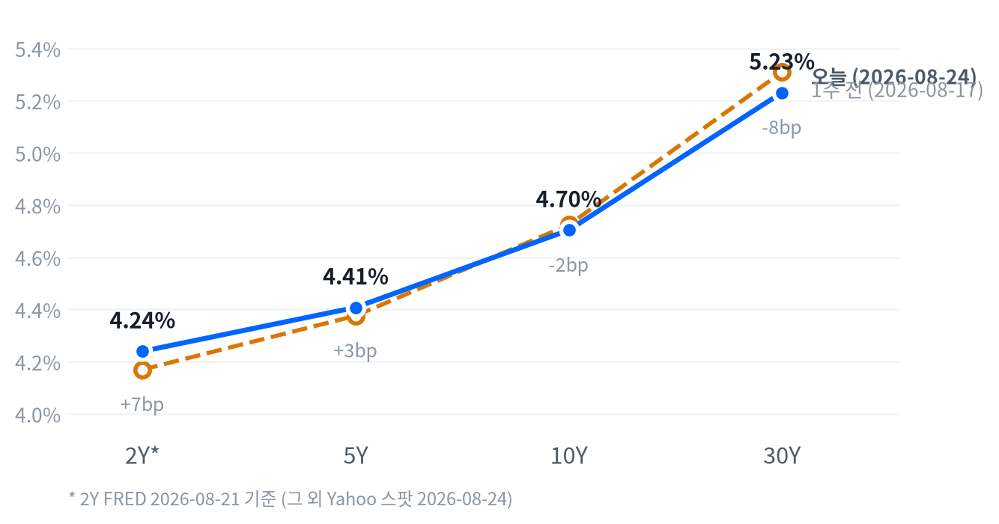

8/24(월) 뉴욕증시는 혼조 마감했습니다. 다우는 +0.26% 올라 사상 최고치(53,417)를 새로 쓴 반면, 나스닥과 러셀2000은 나란히 -0.76% 밀리며 메모리·반도체·AI 인프라 관련주 급락이 지수를 눌렀습니다.
주말 사이 트럼프 행정부가 애플의 중국산 메모리(CXMT·YMTC) 조달을 허용할 수 있다는 보도가 나오며 마이크론(-5.83%)과 삼성전자(-8.70%)가 급락했습니다. 금은 안전자산 수요에 힘입어 +1.86% 오르며 사상 최고치(4,710달러)를 새로 썼습니다.
오늘의 행동. 2~6주 시계에서 귀금속(금) 비중을 확대하고 에너지는 축소합니다. 주식·채권·FX·메모리·AI 인프라는 트리거가 아직 열리지 않아 그대로 유지합니다.
왜 지금인가. 금은 20일 수익률이 15.6%로 사전에 걸어둔 확대 트리거를 넘어섰고, 오늘도 사상 최고치를 새로 썼습니다. WTI는 5일 수익률이 0.57%까지 되돌려져 지난주 이란 리스크로 붙었던 지정학 프리미엄이 사실상 소멸했다고 판단합니다.
무효화 조건은 다음과 같습니다. 금은 5일 수익률이 -4% 밑으로 꺾이면 확대를 되돌리고, 에너지는 WTI 5일 수익률이 다시 +6%를 넘으면 재확대를 검토합니다.
| 지수 | 종가 | 등락 | 등락률 |
|---|---|---|---|
| Dow | 53,417.16 | +140.15 | +0.26% |
| S&P 500 Value | 237.76 | +0.52 | +0.22% |
| S&P 500 | 7,652.86 | -21.51 | -0.28% |
| S&P 500 Growth | 137.88 | -0.95 | -0.68% |
| Russell 2000 | 2,995.08 | -22.79 | -0.76% |
| Nasdaq | 25,980.19 | -200.27 | -0.76% |
| 섹터 | 등락률 |
|---|---|
| Consumer Staples | +1.70% |
| Financials | +1.29% |
| Utilities | +1.05% |
| Communication Services | +0.83% |
| Real Estate | +0.55% |
| Consumer Discretionary | +0.24% |
| Materials | +0.07% |
| Health Care | +0.05% |
| Industrials | -0.69% |
| Energy | -0.83% |
| Technology | -1.78% |
나스닥은 개장(09:30 ET) 직후 시가 대비 -0.56%까지 저점을 낮췄다가 정오(12:00 ET)에는 +0.20%까지 고점을 높였습니다. 하지만 오후 내내 상승분을 반납하며 시가 대비 -0.30%로 마감했습니다. S&P500도 같은 흐름을 그렸습니다 — 09:30 ET 저점(-0.33%)과 12:00 ET 고점(+0.09%)을 지나 시가 대비 -0.14%로 장을 마쳤습니다.
러셀2000은 반등이 없었습니다. 09:30 ET 개장이 당일 고점이었고, 이후 내리 밀려 13:30 ET에 시가 대비 -0.79%까지 저점을 낮췄습니다. 대형주가 정오 무렵 상승분을 만들어낸 것과 달리, 소형주는 하루 종일 약세를 벗어나지 못했습니다.
엔비디아는 장중 한때 시가 대비 -3.72%(15:30 ET 저점)까지 밀렸고, 종가는 전일 대비 -2.91%였습니다(두 값은 기준가가 달라 그대로 견줄 수는 없습니다). 이 오전 저가 매수·오후 재매도 패턴은 수요일(8/26) 실적 발표를 앞둔 포지션 축소로 볼 수 있습니다.
이날 낙폭은 메모리·반도체·AI 인프라 관련주에 집중됐습니다. 트럼프 행정부가 애플의 중국산 메모리 조달을 허용할 수 있다는 주말 보도가 촉매였고, 반대로 유틸리티(+1.05%)·필수소비재(+1.70%)·금융(+1.29%) 같은 경기방어 섹터가 지수를 받쳤습니다. 성장주 지수(-0.68%)와 가치주 지수(+0.22%) 사이의 스타일 로테이션도 뚜렷했습니다.
다우가 나홀로 최고치를 새로 쓴 것은 지수 가중치가 낮은 메모리·반도체·AI 인프라주의 급락을 금융·필수소비재 같은 경기방어주가 상쇄했기 때문입니다. 성장주 대비 가치주가 강세를 보인 로테이션은 오늘의 방어적 포지셔닝을 보여주지만, 엔비디아 실적(8/26)이라는 다음 촉매를 지나기 전까지는 이 로테이션의 지속성을 단정하기 어렵습니다.
| 만기 | 종가(2026-08-24) | 전일比(bp) | 1주 전 | 주간 변화(bp) |
|---|---|---|---|---|
| 2Y* | 4.24% | +5.0bp | 4.17% (8/14) | +7.0bp |
| 5Y | 4.408% | -1.6bp | 4.376% (8/17) | +3.2bp |
| 10Y | 4.704% | -3.4bp | 4.724% (8/17) | -2.0bp |
| 30Y | 5.231% | -4.5bp | 5.309% (8/17) | -7.8bp |

차트의 2Y*는 FRED 2026-08-21 기준(1영업일 지연), 나머지 만기는 Yahoo 스팟 2026-08-24 기준으로 표기 기준일이 다르다는 점을 감안해서 볼 것.
2s10s 스프레드는 46.4bp입니다(2Y는 FRED 8/21, 10Y는 Yahoo 8/24 기준이 섞인 값). 두 다리 날짜를 맞춘 FRED 동일자(8/21) 기준으로는 50.0bp로 3.6bp 더 높습니다. 다만 이 차이는 5bp 문턱에는 못 미쳐, 날짜 불일치가 크게 부풀린 수준은 아닙니다. 당일 커브 형태를 논할 때는 두 다리 모두 Yahoo 8/24 동일자인 5s30s 스프레드 82.3bp를 기준으로 삼습니다.
오늘 하루로 보면 5Y(-1.6bp)보다 30년물(-4.5bp)이 더 크게 내려 장기물이 벨리보다 빠르게 밀리는 완만한 불 플래트닝이 나타났습니다. 주간 단위로도 같은 방향입니다 — 5Y가 +3.2bp로 오히려 오른 반면 30년물은 -7.8bp 내려, 5s30s 스프레드가 한 주 동안 11.0bp 좁혀졌습니다.
2Y는 FRED 기준 1주 전(8/14) 대비 +7.0bp로 반대 방향을 가리키지만, 관측 구간 자체가 다른 만큼 단기물이 이번 플래트닝에 실제로 가담했는지는 단정하지 않습니다. 차트의 2Y*는 이 기준일 불일치를 나타낸 표기입니다.
FRED 동일자(2026-08-21) 기준으로 10년물 명목금리는 하루 동안 +5bp 움직였는데, 이 상승은 전부 실질금리(+5bp)에서 나왔고 기대인플레는 변화가 없었습니다. 5년물도 같은 날 명목 +4bp 전부가 실질금리에서 나와, 실질금리가 유일한 동인이었습니다.
주간 기준(FRED, 8/14→8/21)으로는 구성이 뒤집힙니다. 10년물 명목 +6bp는 실질금리가 오히려 -1bp 내린 가운데 기대인플레가 +7bp 올라 상승분을 이끌었습니다. 5년물도 명목 +7bp 중 실질 -3bp·기대인플레 +10bp로 같은 구도였습니다.
10년 기간프리미엄(2026-08-14 기준)은 1일 +1.6bp, 5일 +1.4bp로 확대돼, 국채 수급·불확실성 프리미엄이 실질금리보다 더 꾸준히 얹히고 있다는 정황을 보탭니다. 장기 인플레이션 기대의 앵커를 보여주는 5년 후 5년 기대인플레는 2026-08-24 기준 2.32%입니다. 하루로는 -2bp 진정됐지만 한 주로는 +1bp 올라 완만한 상승세를 유지했습니다.
하이일드 스프레드(2.7%, 8/21 기준)는 1일 -5bp, 투자등급 스프레드(0.81%)는 1일 -1bp로 둘 다 좁혀졌습니다. 신용시장은 오늘의 주식 조정에 스트레스 신호를 보내지 않았습니다.
CNBC는 오늘 금리 하락의 배경으로 재무부가 자체 재정계정(General Account, 약 1조 달러)을 활용해 국채 바이백 재원을 마련할 수 있다는 보도를 촉매로 지목했습니다. 반면 Fortune은 잭슨홀을 앞두고 장중 금리가 오히려 상승했다고 보도했는데, 이는 오전 재료 소화 이후 오후에 되돌림이 나타난 장중 변동성을 반영한 것으로 볼 수 있습니다.
채권 포지션은 숏 바이어스·벨리 중심 보유를 유지합니다. 30년물이 5.231%로 여전히 5.05~5.40% 구간에 머물러 있어, 장기물 비중을 늘리려면 5.05% 하회를 먼저 확인해야 합니다.
| 페어 | 종가 | 등락 | 등락률 |
|---|---|---|---|
| DXY | 98.99 | +0.19 | +0.19% |
| USD/KRW | 1,382.14 | -8.65 | -0.62% |
| USD/JPY | 159.07 | +0.19 | +0.12% |
| EUR/USD | 1.1667 | -0.0021 | -0.18% |
USD/JPY는 새벽(01:30 ET) 시가 대비 -0.17%로 저점을 찍은 뒤 정규장 들어 꾸준히 올라 09:30 ET에 +0.20%까지 고점을 높였고, 종가는 시가 대비 +0.06% 소폭 강세로 마감했습니다.
DXY는 +0.19% 올라 완만한 강세를 보였지만 원화(-0.62%)는 달러 대비 오히려 더 강했던 흐름이 뚜렷했습니다. 위험자산 조정 국면에서도 원화가 개별적으로 버틴 셈입니다.
달러가 완만하게 오르는데도 원화가 더 강했던 흐름은 FX 스탠스(달러 소폭 숏)의 논거와 결이 다르지 않습니다. 오늘 하루의 등락만으로 스탠스를 바꿀 근거는 아니며, DXY 20일 수익률이 -3% 밑으로 추가 하락하는지가 다음 확인 지표입니다.
| 품목 | 종가 | 등락 | 등락률 |
|---|---|---|---|
| WTI | $84.98 | -2.08 | -2.39% |
| Brent | $91.99 | -2.40 | -2.54% |
| Natural Gas | $2.81 | +0.03 | +1.23% |
| Gold | $4,710.00 | +85.90 | +1.86% |
WTI는 이른 시간(08:30 ET) 시가 대비 +0.74%까지 고점을 찍은 뒤 11:30 ET에는 -1.46%까지 저점을 낮췄고, 종가는 시가 대비 -0.74%로 하락 마감했습니다. 이란 관련 지정학 프리미엄이 오전 중 빠르게 빠진 흐름으로 볼 수 있습니다.
금은 09:30 ET 시가 대비 +0.86%로 고점을 찍은 뒤 14:00 ET에 -0.36%까지 되밀렸다가 다시 올라, 종가는 시가 대비 +0.25%로 마감하는 V자 흐름을 그렸습니다. 잭슨홀을 앞둔 금리·달러 약세 기대와 안전자산 수요가 겹친 결과로 볼 수 있습니다.
오늘 원자재 중 최대 변동은 Brent(-2.54%)였습니다. 위험자산 조정과 함께 유가가 동반 하락한 반면 금(+1.86%)과 천연가스(+1.23%)는 올라 방향이 갈린 하루였습니다.
국면은 오늘도 교착에 머뭅니다. 오늘도 새로 발표된 헤드라인 경제지표가 없어 성장·인플레 두 축의 점수가 어제와 같은 관측치로 계산되고, 산술적으로도 국면이 움직일 수 없는 하루였습니다. 두 축 모두 여전히 어느 쪽으로도 뚜렷하게 기울지 않는 중립권에 머뭅니다(성장축 -0.182, 인플레축 -0.264). 이 국면이 이어진 지는 엿새째입니다.
성장 쪽은 고용·생산활동이 완만한 개선·보합권에 머무는 사이 소비가 뚜렷하게 꺾이면서, 셋을 합친 성장축 전체가 방향을 잃었습니다. 물가 쪽도 CPI·PPI의 완만한 둔화와 미시간대 기대인플레의 재가속 판정이 뒤섞여, 순합산으로는 완만한 디스인플레이션 그 이상도 이하도 아닙니다.
이 판정은 실제로 새로운 지표가 축 점수를 밀어야만 국면이 넘어간다는 원칙 위에 서 있습니다. 오늘은 그런 신규 발표 자체가 없어, 국면도 정책 경로도 어제 판단을 그대로 승계합니다.
고용은 개선 쪽입니다. 일곱 지표 중 다섯이 좋아지는 방향입니다. 신규 청구 4주 평균이 20.4만 건으로 뚜렷하게 낮아졌고, 구인건수(JOLTS)도 735.9만 건으로 완만하게 개선됐습니다. 시간당 임금은 전월 0.29%에서 0.05%로 늘어나는 속도가 완만하게 둔화됐고, 비농업 고용도 +2만 명에서 -2.3만 명으로 돌아서 고용축 안에서 이 둘이 반대 방향을 가리키네요. 고용축 +0.398
| 지표 | Actual | Forecast | Previous | 발표일 | 판정 | 추세 |
|---|---|---|---|---|---|---|
| 신규 실업수당 청구(주간) | 206K | 210K | 212K | 2026-08-20(목, 주간 8/15) | 하회▼ | 개선 |
| 신규 청구 4주 평균 | 204K | — | 199.75K | 2026-08-20(목, 주간 8/15) | 개선 | |
| 계속 실업수당 청구 | 1,799K | — | 1,781K | 2026-08-20(목, 주간 8/8) | 개선 | |
| JOLTS 구인건수 | 7,359K | — | 7,537K | 2026-06(기준월) | 개선 | |
| 비농업 고용(증감) | -23K | — | +20K | 2026-07(기준월) | 악화 | |
| 실업률 | 4.1% | — | 4.2% | 2026-07(기준월) | 개선 | |
| 평균 시간당임금 MoM | +0.05% | — | +0.29% | 2026-07(기준월) | 악화 |
생산·활동은 보합입니다. 다섯 지표 중 셋이 개선 방향이지만 나머지가 반대로 움직여 축 전체 방향은 뚜렷하지 않습니다. 기존주택 판매는 406만 건으로 완만하게 개선됐고, 내구재 주문도 +0.47%로 전월(-4.00%)에서 반등하며 개선 쪽에 무게를 보탰습니다. 산업생산은 전월비 +0.20%로 플러스는 유지했지만 전월(+0.27%)보다 증가폭이 줄어 완만하게 후퇴했네요. 지난주 발표된 S&P Global 플래시 종합 PMI(56.0, 4년래 최고)와 필라델피아 연은 제조업지수(47.4, 2021년 이후 최고)는 이 축 점수 산정에는 포함되지 않습니다. 다만 체감 경기가 견조하다는 정황은 함께 보탭니다. 생산·활동축 +0.224
| 지표 | Actual | Forecast | Previous | 발표일 | 판정 | 추세 |
|---|---|---|---|---|---|---|
| 산업생산 MoM | +0.20% | — | +0.27% | 2026-07(기준월) | 악화 | |
| 내구재 수주 MoM | +0.47% | — | -4.00% | 2026-06(기준월) | 개선 | |
| 신규주택판매 | 628K | — | 618K | 2026-06(기준월) | 보합 | |
| 기존주택판매 | 4.06M | ~4.06M(NAR 컨센서스) | 4.13M | 2026-08-20(목, 기준월 07) | 부합= | 개선 |
| 실질GDP 성장률 QoQ(연율) | +1.5% | — | +2.1% | 2026-04(기준월) | 보합 | |
| S&P Global 플래시 제조업 PMI | 53.2 | 53.9 | 53.9 | 2026-08-21(금) | 하회▼ | — |
| S&P Global 플래시 서비스업 PMI | 56.8 | 54.0 | 54.6 | 2026-08-21(금) | 상회▲ | — |
| S&P Global 플래시 종합 PMI | 56.0 | 54.0 | 54.5(추정) | 2026-08-21(금) | 상회▲ | — |
| 필라델피아 연은 제조업지수(현재활동) | 47.4 | — | 41.4 | 2026-08-20(목) | — |
소비는 뚜렷하게 악화됐습니다. 두 지표 모두 나빠지는 방향이라 소비축이 네 축 중 가장 크게 꺾였습니다. 소매판매는 7월 전월비 -0.58%로 6월 +0.25%에서 감소로 전환했고, 미시간대 소비자심리지수는 49.5로 전월(44.8)보다 숫자로는 올랐지만 최근 수개월 추세로는 여전히 악화 흐름에서 벗어나지 못했습니다. 소비축 -1.168
| 지표 | Actual | Forecast | Previous | 발표일 | 판정 | 추세 |
|---|---|---|---|---|---|---|
| 소매판매 MoM | -0.58% | +0.1%(컨센서스) | +0.25% | 2026-08-14(금, 기준월 07) | 하회▼ | 악화 |
| 미시간대 소비자심리지수 | 49.5 | — | 44.8 | 2026-06(기준월) | 악화 |
물가는 둔화 쪽이지만 폭은 크지 않습니다. 여덟 지표 중 셋만 뚜렷하게 둔화 방향을 가리켜 절대다수는 아직 재가속이나 교착에 머뭅니다. 소비자물가는 전월비 +0.07%로 낮은 수준을 유지했고, 생산자물가도 전월비 -0.03%로 두 달 연속 마이너스를 이어가며 둔화 판정을 받았습니다. 반대로 미시간대 1년 기대인플레는 4.6%로 숫자상 전월(4.8%)보다 낮아졌음에도 추세 판정에서는 재가속으로 분류돼, CPI·PPI의 완만한 둔화와 기대인플레의 재가속이 물가축 안에서 정면으로 엇갈리네요. 물가축 -0.264
| 지표 | Actual | Forecast | Previous | 발표일 | 판정 | 추세 |
|---|---|---|---|---|---|---|
| CPI YoY | 3.54%(FRED) | 3.4%(BLS 컨센서스) | 3.73% | 2026-08-12(수, 기준월 07) | 재가속 | |
| CPI MoM | 0.07%(FRED) | 0.1%(BLS) | -0.42% | 2026-08-12(수) | 둔화 | |
| 근원 CPI YoY | 2.79%(FRED) | 2.5%(BLS 컨센서스) | 2.81% | 2026-08-12(수) | 교착 | |
| 근원 CPI MoM | 0.22%(FRED) | 0.2%(BLS) | -0.02% | 2026-08-12(수) | 부합= | 둔화 |
| PPI 최종수요 MoM | -0.03% | — | -0.11% | 2026-07(기준월) | 둔화 | |
| PCE 물가지수 YoY | 3.67% | — | 4.08% | 2026-06(기준월) | 재가속 | |
| 근원 PCE YoY | 3.29% | — | 3.42% | 2026-06(기준월) | 재가속 | |
| 미시간대 1년 기대인플레 | 4.6% | — | 4.8% | 2026-06(기준월) | 재가속 |
연준은 다음 회의(9월 16일 FOMC)에서 금리를 동결하고, 인하 재개는 4분기 이후로 미룰 가능성이 가장 유력한 경로로 유지됩니다. CME FedWatch 기준 동결 확률은 68.4%로 어제와 같은 수준입니다 — 오늘도 이 확률을 움직일 만한 신규 헤드라인 발표가 없었습니다.
이 경로를 무효화할 반증 조건은 그대로입니다. 9월 중순 발표될 8월분 CPI가 헤드라인 전월비 0.3% 이상으로 재가속하면 동결-우선 경로는 근거를 잃습니다. 오늘의 확률 이동은 0%p로 시점 판단을 바꿀 임계치(15%p)에 못 미쳐, 9/16 동결·4분기 인하 재개라는 시점 판단 자체는 유지합니다.
인플레축의 디스인플레이션 모멘텀(인플레축 -0.264)이 지속되면 실질금리가 정점을 지났다는 기대가 장기물 총수익과 금 보유비용 하락을 동시에 지지하는 경로입니다. FRED 동일자(8/21) 분해에서는 10년물 상승분(+5bp)이 전부 실질금리(+5bp)에서 나와, 이 경로가 가리키는 실질금리 하락은 아직 뚜렷하게 확인되지 않고 있습니다. Core PCE YoY가 3.0% 밑으로 추가 둔화되거나 30년물이 5.05% 밑으로 내려오면 이 경로에 더 무게가 실립니다.
이 구조적 우호 판단(3~6개월)과 채권 스탠스(2~6주, 숏 바이어스)는 방향이 정반대입니다. 30년물이 5.231%로 여전히 5.05~5.40% 구간에 머물러 있어, 2~6주 시계에서는 아직 듀레이션을 늘릴 만큼 추세가 꺾였다고 보지 않습니다. 구조적 전망이 실제 포지션으로 이어지려면 30년물이 5.05% 밑으로 내려오는 확인이 먼저 필요합니다.
성장 모멘텀이 정체된 가운데(성장축 -0.182) 완만한 디스인플레이션이 상쇄돼 주식·에너지 모두 중립을 유지합니다. 오늘 메모리·반도체 셀오프에 따른 나스닥·러셀2000 약세는 매크로 레벨 이벤트라기보다 업종 재료로 봅니다. ISM 제조업 PMI가 50을 상회한 채 지속되거나 10년물이 4.5% 밑으로 내려오면 이 경로가 우호 쪽으로 넘어갑니다.
성장 정체 속 디스인플레이션이 이어지면 실질금리 스프레드가 좁혀질 것이란 기대가 달러 약세 경로를 지지합니다. DXY는 최근 20일 -2.48%로 완만한 약세 추세를 유지 중이며, 이 추세가 -3%보다 더 내려가며 가속되거나 FedWatch 인하 확률이 확대되면 비우호 판정에 더 무게가 실립니다.
이 그룹은 매크로 지표와 사이클이 따로 움직입니다. 소비축 부진과 무관하게 기업의 AI 데이터센터 캐펙스는 독립적인 성장 경로이며, 오늘 메모리주 급락도 매크로 지표가 아니라 애플의 중국산 메모리 조달 허용 가능성이라는 정책 재료가 원인이었습니다.
AI 인프라도 마찬가지로 오늘 마벨 등의 하락은 캐펙스 사이클 자체보다 엔비디아 실적(8/26)을 앞둔 포지션 정리 성격이 강합니다. 메모리는 마이크론 등 주요업체의 회계연도 가이던스 상향이 지속되거나 D램 현물가 추세가 살아나면 우호 판정을 유지합니다. AI 인프라는 30년물이 5.4%를 다시 넘어서거나 하이퍼스케일러의 3분기 캐펙스 가이던스가 꺾이면 비우호 쪽으로 넘어갑니다.
이번 주 잭슨홀 경제정책 심포지엄에서는 연준 이사 케빈 워시의 기조연설이 최대 변수로 꼽힙니다. 인플레이션(3%대 후반)과 성장 둔화(1분기 GDP +1.5%, 7월 고용 -23K) 사이에서 그가 어느 쪽에 무게를 싣는지가 채권·주식 양쪽의 관전 포인트입니다.
엔비디아 실적은 8월 26일(수) 발표됩니다. AI 인프라·메모리 바스켓 전반의 방향을 가를 다음 촉매입니다.
FOMC 정례회의는 9월 16일로 예정돼 있고, CME FedWatch는 이 회의에서의 동결 확률을 68.4%로 반영 중입니다. 8월분 CPI는 통상 일정대로면 9월 중순 발표되며, 헤드라인 전월비 0.3% 이상으로 재가속하면 현재의 동결-우선 정책 경로 판단을 되짚어야 합니다.
어제 걸어둔 트리거 중 두 개가 오늘 충족됐습니다. 원자재·에너지는 WTI 5일 수익률이 0.57%까지 되돌려져 축소 트리거를 충족했습니다. 원자재·귀금속은 금 20일 수익률이 15.6%로 확대 트리거를 넘어섰네요. 에너지는 소폭확대에서 중립으로 낮추고, 귀금속은 소폭확대에서 비중확대로 올립니다.
나머지 자산군은 트리거 미충족으로 유지합니다. 주식은 50일 이동평균 상회폭이 1.41%로 확대 트리거(4.0%)에 못 미칩니다. VIX도 15.85로 축소 트리거(20)와는 거리가 있어 소폭확대를 유지합니다.
채권은 30년물이 5.231%로 확대·축소 트리거 사이에 머물러 숏 바이어스를 유지합니다. FX도 DXY 20일 수익률이 -2.48%로 아직 확대 트리거(-3.0%)를 밑돌지 않아, 달러 소폭 숏을 유지합니다.
메모리·AI 인프라도 유지합니다. 메모리는 20일 초과수익이 -7.95%p로 확대 트리거(+5.0%p)에 못 미치네요. 오늘 애플의 중국산 메모리 조달 허용 가능성 보도로 미국·한국 메모리주가 동반 급락했지만, 이는 정책 리스크라는 개별 재료라 상대비중을 바꿀 근거가 되지 못합니다. AI 인프라도 5일 초과수익이 -11.52%p로 여전히 마이너스권이라 중립을 유지합니다.
| 자산군 | 등급 | 유지 | 전일대비 | 논거 | 다음 분기점 |
|---|---|---|---|---|---|
| 주식 | 소폭확대 대형 성장주는 선별 유지, 소재·헬스케어·소형주·가치주 확대 | 2영업일 | 유지 | 브레드스 확산 트리거가 지난 금요일 충족돼 소폭확대로 올린 지 이틀째입니다. 대형 기술주 쏠림이 완화되고 상승 저변이 소재·헬스케어·금융 등으로 넓어지는 흐름을 2~6주 시계에서 계속 확인하고 있습니다. | S&P 500 50DMA +4.0% 상회(현재 1.41%) 또는 11개 섹터 전부 1개월 플러스(현재 8개) 시 추가 확대, VIX 20 상회(현재 15.85) 또는 20DMA -1.0% 이상 하회(현재 -0.05%) 시 중립 복귀 |
| 채권 | 숏 바이어스 커브: 벨리 OW · 5Y 중심 보유, 30Y 신규 확대 보류 | 7영업일 | 유지 | 30년물이 5.231%로 근 20년래 고점권을 완전히 벗어나지 못했습니다. 2~6주 시계에서 추세 전환을 아직 확인하지 못해 숏 바이어스·벨리 중심 보유를 유지합니다. | 30Y 5.40% 상회(현재 5.231%) 또는 5s30s 주간 +15bp 이상 확대(현재 -11.0bp) 시 숏 강화, 30Y 5.05% 하회 시 완화 |
| FX | 달러 소폭 숏 엔화는 개별 요인이 커 DXY와 분리 점검 — USD/JPY 158~159선 | 7영업일 | 유지 | DXY가 20일간 -2.48%로 완만한 약세 추세를 유지합니다. 오늘도 원화가 달러 대비 -0.62%로 개별적으로 더 강했던 흐름은 같은 방향입니다. | DXY 20일 -3.0% 이하(현재 -2.48%) 시 숏 확대, DXY 101 상회(현재 98.99) 시 시나리오 무효화 |
| 원자재 | 중립 (에너지) 비중확대 (귀금속) · 금 중심, 이중 헤지 성격 | 에너지 1영업일 · 귀금속 1영업일 | 에너지 ▼1단계 · 귀금속 ▲1단계 | WTI 5일 수익률이 0.57%까지 되돌려져 지정학 프리미엄이 사실상 소멸했다고 판단해 에너지를 중립으로 낮춥니다. 금은 20일 수익률 15.6%로 확대 트리거를 넘어섰고 오늘도 사상 최고치를 새로 쓰며 안전자산 수요와 달러 약세를 동시에 반영하는 이중 헤지 효과가 강해져 비중확대로 올립니다. | WTI 5일 +6% 이상 재반등(현재 0.57%) 시 에너지 재확대, -6% 이하 급락 시 축소 검토. 금 5일 -4% 이하(현재 +6.61%) 또는 DXY 101 상회 시 귀금속 축소 |
| 메모리 | 중립 OW에서 축소 — 초과수익 마이너스 지속 | 5영업일 | 유지 | 미국 상장 메모리 바스켓의 20일 초과수익이 -7.95%p로 여전히 마이너스권입니다. 오늘 애플의 중국산 메모리 조달 허용 가능성 보도發 급락은 AI 데이터센터 수요라는 구조적 축과는 별개인 정책 리스크 재료라 중립을 유지합니다. | 20일 초과수익 +5.0%p 이상 재돌파(현재 -7.95%p) 시 확대, -15.0%p 이하로 악화 시 UW 검토 |
| AI 인프라 | 중립 실적 모멘텀 종목만 선별, 파이낸싱 리스크는 개별 이슈로 분리 | 7영업일 | 유지 | 5일 초과수익이 -11.52%p로 여전히 마이너스권입니다. 오늘 마벨·코히런트·루멘텀 동반 하락도 엔비디아 실적을 앞둔 광범위한 포지션 정리로 보여 테마 단위 베팅은 이릅니다. | 5일 초과수익 +5.0%p 이상(현재 -11.52%p) 시 확대, 하이퍼스케일러 캐펙스 가이던스 하향 확인 시 UW 검토 |
1) 엔비디아 실적 쇼크. 8/26 실적에서 가이던스가 시장 기대를 밑돌면 AI 인프라·메모리 바스켓 전반의 밸류에이션 재평가 압력이 커지고, 오늘 상향한 귀금속 비중확대의 안전자산 논리가 오히려 강화될 수 있습니다.
2) 잭슨홀 매파 서프라이즈. 케빈 워시 이사가 물가에 무게를 싣는 발언을 하면 동결-우선 정책 경로(§8)의 확률이 흔들리고, 장기금리가 재상승하며 채권 숏 바이어스를 더 강화해야 할 수 있습니다.
3) 애플-중국 메모리 정책 반전. 정치권 반대 기류가 다시 부각돼 이번 조달 허용 가능성이 철회되면 메모리주는 단기 반등할 수 있지만, 정책 불확실성 자체가 반복되는 변수라 2~6주 시계의 상대비중 판단을 바꾸지는 않습니다.
메모리 3인방 급락 — Samsung Elec(-8.70%)·Seagate(-6.51%)·Micron(-5.83%). 트럼프 행정부가 애플의 중국산 메모리 조달을 허용할 수 있다는 주말 보도가 촉발한 셀오프로, 미국·한국 메모리주가 동반 급락했습니다.
금(+1.86%) — 사상 최고치 경신. 4,710달러로 마감하며 잭슨홀을 앞둔 안전자산 수요를 반영했습니다.
다우(+0.26%) 대 나스닥(-0.76%) — 지수 간 디커플링. 금융·필수소비재 같은 경기방어 업종이 지수 가중치가 낮은 메모리·반도체의 급락을 상쇄하며 다우만 나홀로 최고치를 새로 썼습니다.
| 종목 | 종가 | 등락률 |
|---|---|---|
| Samsung Elec | ₩257,000 | -8.70% |
| Seagate | $794.65 | -6.51% |
| Micron | $910.43 | -5.83% |
| Western Digital | $435.38 | -5.24% |
| SK hynix | ₩1,671,000 | -3.41% |
트럼프 행정부가 애플의 중국산 메모리(CXMT D램·YMTC 낸드) 조달을 허용할 수 있다는 주말 보도가 이날 셀오프의 진앙이었습니다. 시진핑 주석의 9월 방미를 앞둔 외교적 제스처로 해석되며, 삼성전자(-8.70%)·SK하이닉스(-3.41%)와 미국 메모리주가 동반 급락했습니다.
지난주(8/17)에는 러트닉 상무장관이 "미국 우량기업이 중국산 메모리를 쓰는 건 좋지 않다"고 언급하며 정반대로 미국 메모리주가 급등했던 만큼, 정책 불확실성 자체가 최근 변동성의 핵심 변수로 자리잡았습니다. 여기에 YMTC 계열사가 약 49억 달러 규모 상하이 IPO를 신청했다는 소식도 겹치며 중국발 경쟁 압력 우려를 자극했습니다.
마이크론·삼성전자·SK하이닉스와 메모리 ETF는 6월 말 고점 대비 20% 이상 하락해 약세장 국면에 들어섰다는 평가도 나옵니다. 다만 마이크론은 연초 대비로는 여전히 큰 폭 올라 있어, 이번 조정을 급등에 따른 되돌림으로 보는 시각도 병존합니다.
AI 데이터센터向 HBM·서버 D램 수요라는 구조적 축은 오늘의 급락과 무관하게 유효합니다. 다만 미국 상장 메모리 바스켓의 2~6주 상대강도는 20일 초과수익 -7.95%p로 여전히 마이너스권이라, 정책 불확실성이 잦아드는 신호가 나오기 전까지는 상대비중 확대를 서두르지 않는 편이 합리적입니다.
| 종목 | 분야 | 종가 | 등락률 |
|---|---|---|---|
| Coherent | 광통신 | $275.49 | -4.85% |
| Lumentum | 광통신 | $830.17 | -4.22% |
| Marvell | AI칩·커스텀 실리콘(ASIC) | $229.29 | -3.27% |
| Vertiv | 데이터센터 전력·냉각 | $254.97 | -2.66% |
| GE Vernova | 전력 인프라(그리드·터빈) | $942.10 | -1.54% |
오늘 5종목 모두 하락했지만 종목별로 특정된 새 악재 보도는 확인되지 않았습니다. 엔비디아 실적(8/26)과 잭슨홀을 앞둔 광범위한 포지션 정리로 보는 시각이 우세합니다.
8월 내내 광학·AI 인프라 그룹은 실적을 앞둔 차익실현과 밸류에이션 재평가 논쟁이 반복돼 왔습니다. GE 버노바·버티브는 AI 데이터센터發 전력 수요 테마의 핵심 종목으로 꼽히지만, 오늘은 개별 뉴스보다 광학·메모리 셀오프에 따른 동반 약세 성격이 강했습니다.
파이낸싱 리스크와 실적 경계감은 여전히 개별 이슈로 분리해서 볼 필요가 있습니다. 엔비디아 실적이 확인되기 전까지는 테마 단위 베팅보다 광네트워킹·전력인프라 중 실적 모멘텀이 살아있는 종목을 선별하는 접근이 유효합니다.
본 보고서는 정보 제공 목적으로 작성됐으며 투자 권유가 아닙니다. 시세는 Yahoo Finance, 경제지표는 FRED와 각 발표 기관(BLS·BEA·Census 등), 그 밖의 내용은 본문에 밝힌 출처를 따랐습니다. 매크로 논리·멀티에셋 스탠스는 전일 판단을 승계한 것으로 당일 등락만으로 재해석하지 않았습니다.